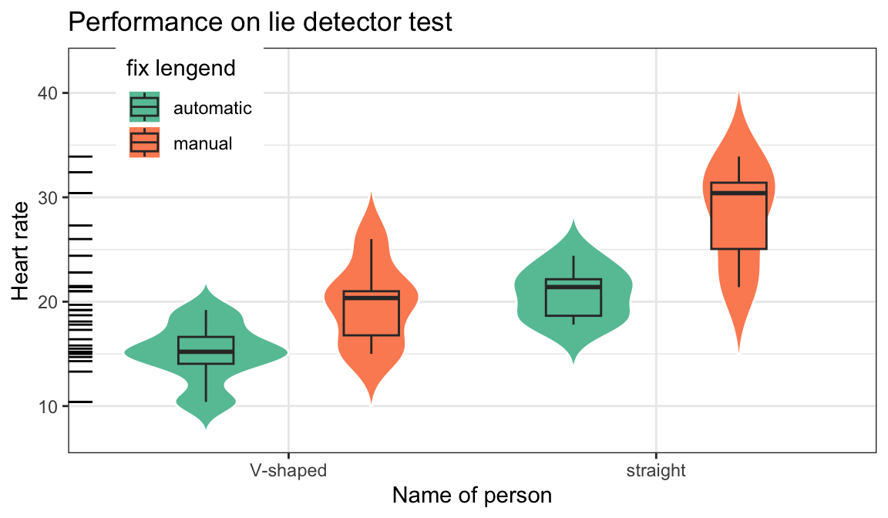
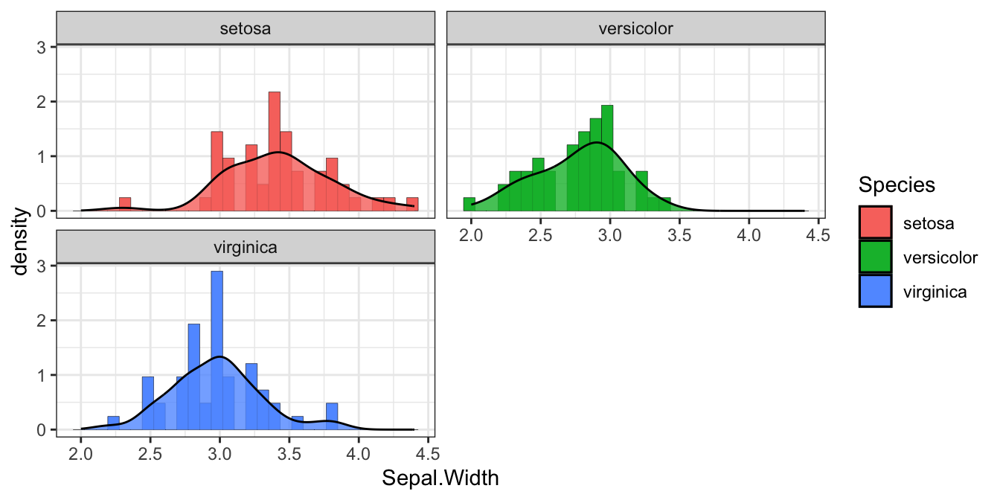
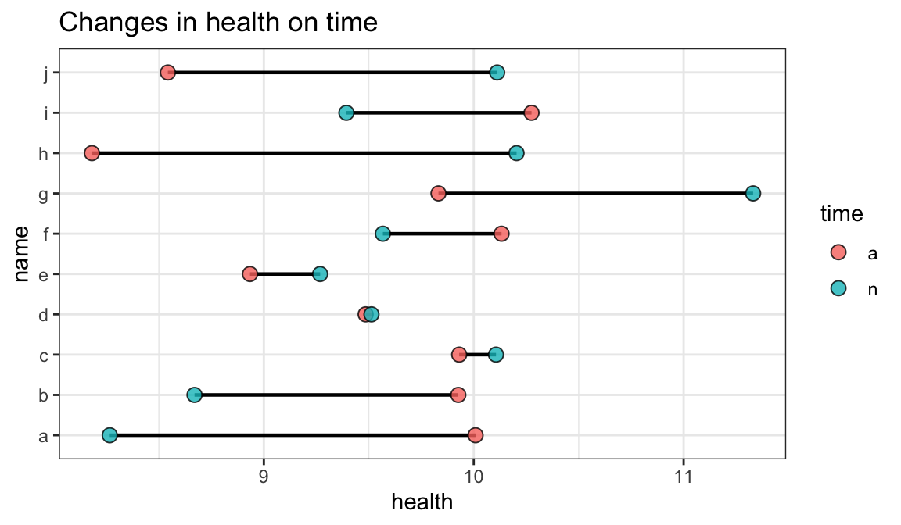

第 1 章 Plots
1.1 箱线图/小提琴图
library(plotly)
library(gganimate)
library(tidyverse)
library(pedquant)
library(leaflet)
library(DiagrammeR)
library(reshape2)p1<-mtcars %>% mutate(am=factor(am),
vs=factor(vs)) %>%
ggplot(aes(x=vs,y=mpg,fill=am))+
geom_violin(col="white",trim = FALSE)+
geom_boxplot(width=.3,position=position_dodge(width=0.9))+
theme_bw()+theme(legend.position = c(0.15,0.85))+
guides(alpha='none')+
labs(x='Name of person',y='Heart rate',title = "Performance on lie detector test")+
scale_fill_brewer(palette="Set2")
p1
1.2 p2
mtcars %>% count(vs,cyl) %>% mutate(name=c("a","b","c","d","e")) %>%
mutate_at(c('vs','cyl'),as.factor) %>%
ggplot(aes(x=vs,y=n,fill=cyl,label=name))+
geom_bar(stat = "identity",
position = 'fill',col=1)+
geom_text(aes(label=name),size=4,vjust=0.5,position = 'fill')+
scale_fill_brewer(palette="Set2")+
# scale_fill_manual(values = heat.colors(7))+
# scale_fill_manual(values = terrain.colors(7))+
labs(title="Facebook theme",caption = "made by chz")+
theme_minimal()+
theme(plot.title = element_text(hjust = 0.5,#居中
vjust =0,#上下
color = 'red',
face = "italic")
)
1.3 点线图
dd<-tibble(name=rep(letters[1:10],2),health=rnorm(20,10,1),time=rep(c('a','n'),each=10))
dd%>%ggplot(aes(x= health, y= name)) +
geom_line(aes(group = name))+geom_point(aes(fill=time),shape = 21, size = 1)+
labs(title="Changes in health on time",x="health", y="name")+
theme(axis.text.y = element_text(size = 5))1.4 树图
library(ggplot2)
library(treemapify)
ggplot(G20, aes(area = gdp_mil_usd, fill = hdi,label = country)) +
geom_treemap()+
geom_treemap_text(fontface = "italic", colour = "red",
place = "centre",grow = TRUE,alpha=.6)+
scale_fill_distiller(palette="Reds")
# 其中place参数控制每一个方块中标签相对于四周的位置，
# grow则控制标签是否与方块大小自适应（呈大致比例放大缩小）
# 次级分组（亚群）：
ggplot(G20, aes(area = gdp_mil_usd, fill = hdi, label = country,subgroup = region)) +
geom_treemap() +
geom_treemap_subgroup_border() +
geom_treemap_subgroup_text(place = "centre", grow = T,
alpha = 0.8, colour ="black", fontface = "italic", min.size = 0) +
geom_treemap_text(colour = "red", place = "topleft", reflow = T,alpha=.5)+
scale_fill_distiller(palette="Reds")1.6 自定义
library(magick)
library(grid)
library(ggplot2)
# install.packages("palmerpenguins")
library(palmerpenguins)
p<-ggplot(penguins,aes(x = species, y = body_mass_g)) +
geom_violin(width=0.5,cex=1.2,aes(fill = species),alpha=0.5) +
geom_boxplot(width=0.1,cex=1.2)+
geom_jitter(width = 0.2)+
scale_y_continuous(limits = c(2500,8000))+
theme_classic(base_size = 20) +
scale_fill_manual(values = c("darkorange","purple","cyan4"))p
image <- image_read('www/lp_lh1.png') #magick包的函数读取图片
grid.raster(image, x=0.25, y=0.65, height=0.2) #grid包的函数，叠加图片到现有绘图上
image <- image_read('www/lp_lh2.png')
grid.raster(image, x=0.45, y=0.65, height=0.2)
image <- image_read('www/lh_2.png')
grid.raster(image, x=0.65, y=0.85, height=0.2)
library(png) #读取.png图片
library(jpeg) #读取jpeg图片
library(grid)
library(ggimage) #ggplot2扩展包，配合ggplot2绘图
t=seq(0, 2*pi, by=0.2)
x=16*sin(t)^3
y=13*cos(t)-5*cos(2*t)-2*cos(3*t)-cos(4*t)
a=(x-min(x))/(max(x)-min(x))
b=(y-min(y))/(max(y)-min(y))
bg_img <- image_read('www/xg1.png')
bees <- data_frame(x=a,y=b)
bees$image <- rep(c("www/lp_lh1.png",NA,"www/lh_sm.png",NA),times=8)
ggplot(data = bees, aes(x = x, y = y))+
theme_bw(base_size = 20)+
annotation_custom(rasterGrob(bg_img,
width = unit(1,"npc"),
height = unit(1,"npc")),
-Inf, Inf, -Inf, Inf)+
geom_image(aes(image = image), size = 0.1)现在我们可以试试 bookdown 的一些初级功能了，例如图表。图 1.1 是一幅无趣的散点图，表 1.1 是一份枯燥的数据。
图 1.1: 雷猴啊，散点图！
| Sepal.Length | Sepal.Width | Petal.Length | Petal.Width | Species |
|---|---|---|---|---|
| 5.1 | 3.5 | 1.4 | 0.2 | setosa |
| 4.9 | 3.0 | 1.4 | 0.2 | setosa |
| 4.7 | 3.2 | 1.3 | 0.2 | setosa |
| 4.6 | 3.1 | 1.5 | 0.2 | setosa |
| 5.0 | 3.6 | 1.4 | 0.2 | setosa |
| 5.4 | 3.9 | 1.7 | 0.4 | setosa |
就这样，你可以一直编下去，直到编不下去。